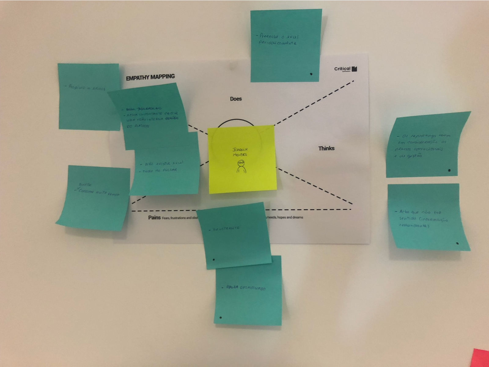
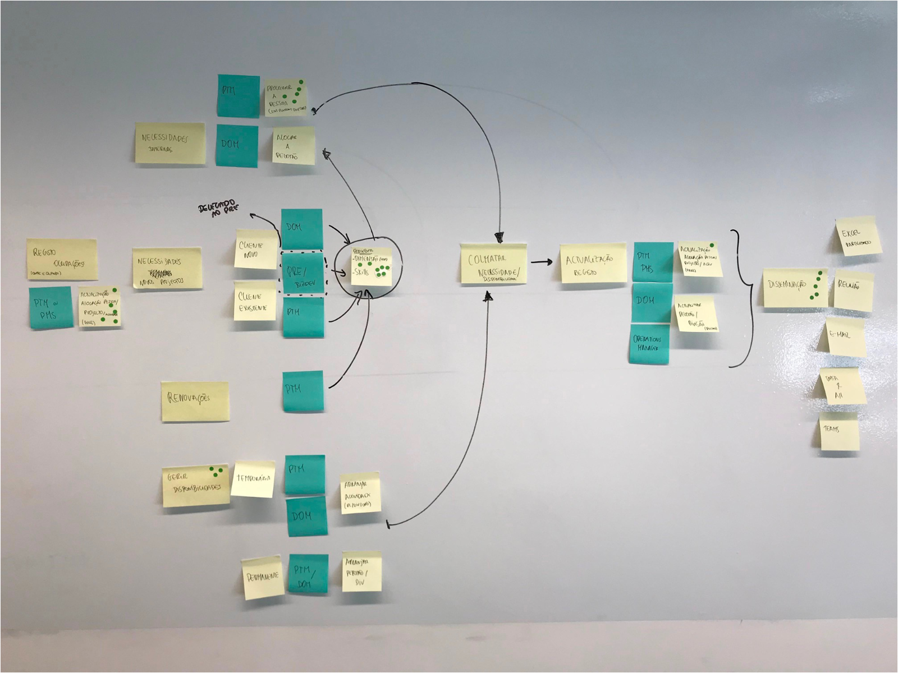

Pulsar
Smart Operations Management Assistant - a unified, cognitive view of business operations across the organization.
><A unified operations platform
PULSAR is a smart operations management platform designed to provide a unified, cognitive view of business operations across the organization. It was created to replace legacy operational systems that no longer met the company's growing business and management needs.
The solution supports multiple business areas and geographies, providing a centralized environment for project and portfolio management, resource allocation, finance, procurement, HR processes, and operational governance.
I had the opportunity to act as both Product Owner and UX Designer for Pulsar - a tool used internally at Critical Software (CSW) and by other clients. Combining the two roles, I helped drive its evolution: prioritizing high-value initiatives, improving usability, and supporting the organization's move away from fragmented legacy systems toward a unified operational management ecosystem.
Pulsar had to deliver an engaging, modern user experience while supporting multi-country operations and multi-currency, and integrate with Jira, Microsoft Dynamics NAV, and Microsoft Dynamics CRM.
><Product Owner & UX Designer
I joined the project after the initial platform had already been launched and was in production. My role combined UX Design and Product Ownership, letting me contribute both strategically and operationally throughout the product lifecycle. This dual responsibility created significant advantages:
><Two hats, one product
Defined and drove the product roadmap while keeping business objectives and development priorities aligned.
Researched, defined, and designed user-centered solutions across multiple modules.
><From opportunities to a roadmap
To define the annual roadmap and budget allocation, collaborative Design Thinking and Lightning Decision Jam workshops were run with stakeholders from across the organization - bringing together Finance, Procurement, Recruitment, Operations, Human Resources, and Management, among other areas, to surface needs from every corner of the business.


These workshops enabled the identification, validation, and prioritization of opportunities across the organization, providing a structured foundation for product planning and feature prioritization.
Inside the platform
{{ s.desc }}
><Coverage across the system
Throughout the project I worked on the definition, prioritization, and design of multiple modules across operational, financial, and organizational management.
Beyond these, I contributed to the continuous evolution of several other operational, financial, and organizational management modules as part of the platform's ongoing growth.